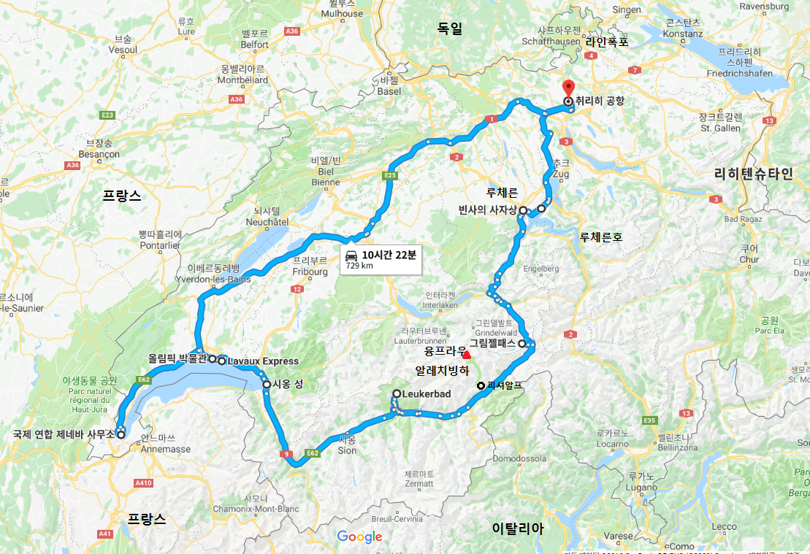
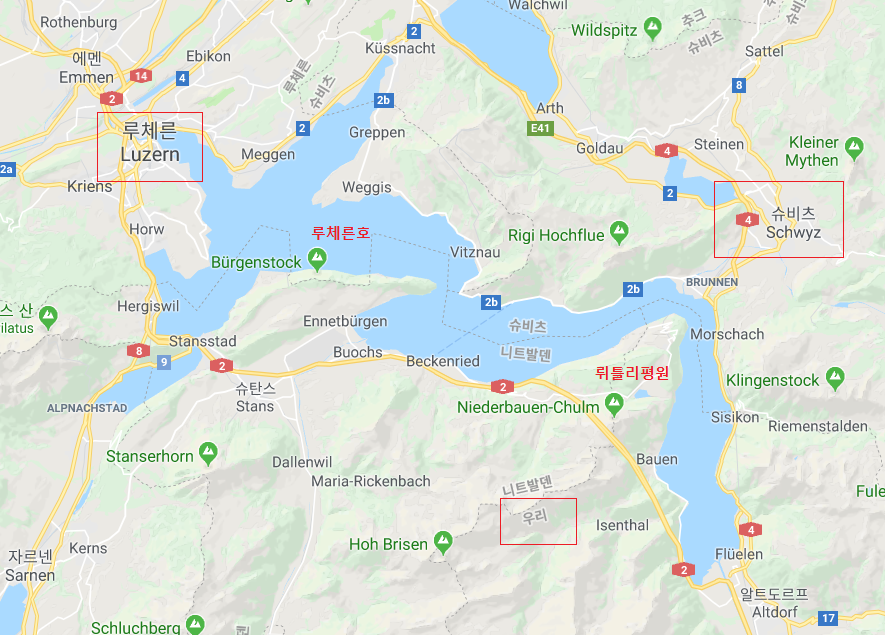

스위스

| 2014년 06월 03일 |
인천(ICN), 쮜리히(ZRH), 루체른 근교, Swiss Chalet Lodge |
| 06월 04일 | 루체른 카펠교, 빈사의사자상, 빙하공원, 호프교회, 교통박물관 |
| 06월 05일 | 그림젤패스, 피에스, (케이블카), 피셔알프, 눈썰매, (알래치빙하 못 봄), 로이커바트 |
| 06월 06일 | 겜미고개(케이블카), 몽트뢰 시옹성, 로잔 올림픽박물관, 라보 익스프레스 |
| 06월 07일 | UN제네바사무국 (팔레데나시옹), 생피에르대성당, ZRH |
| 06월 08일 | ICN |
느낀 점, 배운 것
- 시외에 숙소를 잡으니 매우 저렴하다. (렌터카 필수)- 루체른의 피카소 뮤지엄이 몇 년 전 폐쇄되었다.
- 6월 초에도 눈이 많아 피셔알프-에기스혼 케이블카가 운행하지 않았다. 반드시 사전확인 필요.
- 구글 번역 활용하자. 케이블카 미운영 안내문을 보고도 이해하지 못했다.
- 로이커바트의 라클레트(통감자+치즈) 요리는 정말 맛있었다.
스위스,
1291년의 약속 위에 세워진 나라
스위스의 기원은 1291년 루체른 호수의 뤼틀리 평원에서 우리(Uri), 슈비츠(Schwyz), 운터발덴 (Underwalden) 세 개 칸톤이 맺은 평화 협정에서 시작한다. 합스부르크 왕가에 대항하기 위해 상호간의 협력과 조력에 대해 연맹을 조직했고, 그 후 500 년간 연맹을 넓히며 오늘날의 26 개 칸톤으로 구성된 연방국의 모습을 갖추게 된다. 루체른 호수는 윌리엄 텔 (독일식 발음: 빌헬름 텔)이 활약했던 무대이기도 하다.

스위의 국명, 상징의 기원
스위스 국명(Switzerland),상징의 기원은 슈비츠 칸톤이다.
옆 그림은 슈비츠의 문장(紋무늬문 章글장)이다.

올림픽 박물관
스포츠와 올림픽 관련 전시물들 이 있는 박물관으로 1993 년 후안 안토니오 사마란치의 주도 로 세워졌다. 올림픽 박물관에는 스포츠와 관련된 많은 미술 작품들이 전시되어 있다. 유명한 미술 작품으로 프랑스 조각가 오귀스트 로댕의 《미국 선수 (The American Athlete》, 니키 드 상 팔의 《축구선수들(Les Footballeurs)》 등이 있다.
UN 제네바 사무국
팔레데나시옹(Palais des Nations, 국가들의 궁전)
공식명칭은 UNOG(United Nations Office at Geneva)이다. 팔레데나시옹 은 건물의 명칭으로 통칭된다. 원래는 제1차 세계대전 후 국제연맹의 본부로서 1936년에 건설되었는데, 제2차 세계대전 후인 1945년 국제연맹이 해체되고 UN이 결성된 후 UN에 양도되었다. 몇 번의 증축을 통해 600미터까지 연장되었 으며, 건물 곳곳에는 그림, 조형물 등의 예술 작품이 산재해 있다.